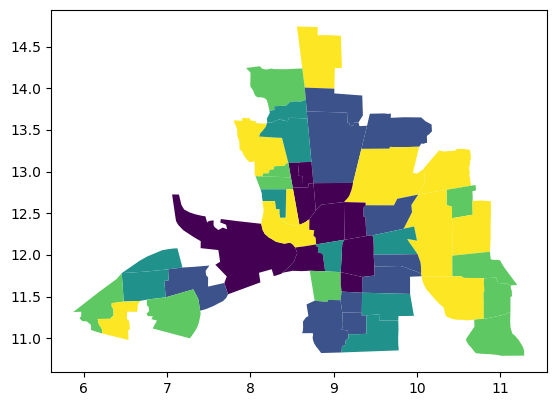

Cross-Sectional Model Comparison: bayespecon vs spreg¶
Columbus example¶
This notebook compares equivalent cross-sectional models between bayespecon and spreg on a real example dataset from the PySAL/spreg ecosystem.
The dependent variable is HOVAL, with INC and CRIME used as explanatory variables.
Model mapping used:
SLX(bayespecon) vsspreg.OLS(slx_lags=1)SAR(bayespecon) vsspreg.GM_LagSEM(bayespecon) vsspreg.GM_ErrorSDM(bayespecon) vsspreg.GM_Lag(slx_lags=1, w_lags=2)SDEM(bayespecon) vsspreg.GM_Error(slx_lags=1)
Dataset: Columbus neighborhood data from libpysal.examples.
import geopandas as gpd
import libpysal
import numpy as np
import pandas as pd
import spreg
from IPython.display import display
from spreg.sputils import _sp_effects, spmultiplier
from bayespecon import SAR, SDEM, SDM, SEM, SLX
columbus = gpd.read_file(libpysal.examples.get_path("columbus.shp"))
columbus.plot("HOVAL", scheme="quantiles")
<Axes: >

w = libpysal.graph.Graph.build_contiguity(columbus).transform("r")
y = columbus.HOVAL.values
X = columbus[["INC", "CRIME"]]
spreg_results = {
"SLX": spreg.OLS(y, X, w=w, slx_lags=1, name_y="HOVAL", name_x=["INC", "CRIME"]),
"SAR": spreg.GM_Lag(y, X, w=w, name_y="HOVAL", name_x=["INC", "CRIME"]),
"SEM": spreg.GM_Error(y, X, w=w, name_y="HOVAL", name_x=["INC", "CRIME"]),
"SDM": spreg.GM_Lag(
y, X, w=w, slx_lags=1, w_lags=2, name_y="HOVAL", name_x=["INC", "CRIME"]
),
"SDEM": spreg.GM_Error(
y, X, w=w, slx_lags=1, name_y="HOVAL", name_x=["INC", "CRIME"]
),
}
spec = "HOVAL ~ 1 + INC + CRIME"
sample_kwargs = dict(draws=1000, tune=1000, chains=4, random_seed=42, progressbar=False)
bayes_models = {
"SLX": SLX(spec, data=columbus, W=w),
"SAR": SAR(spec, data=columbus, W=w),
"SEM": SEM(spec, data=columbus, W=w),
"SDM": SDM(spec, data=columbus, W=w),
"SDEM": SDEM(spec, data=columbus, W=w),
}
bayes_idata = {name: model.fit(**sample_kwargs) for name, model in bayes_models.items()}
GM_Lag
GM_Error
GM_Lag
GM_Error
Initializing NUTS using jitter+adapt_diag...
Multiprocess sampling (4 chains in 2 jobs)
NUTS: [beta, sigma]
/home/runner/micromamba/envs/test/lib/python3.14/site-packages/pymc/step_methods/hmc/quadpotential.py:316: RuntimeWarning: overflow encountered in dot
return 0.5 * np.dot(x, v_out)
Sampling 4 chains for 1_000 tune and 1_000 draw iterations (4_000 + 4_000 draws total) took 15 seconds.
Initializing NUTS using jitter+adapt_diag...
Multiprocess sampling (4 chains in 2 jobs)
NUTS: [rho, beta, sigma]
/home/runner/micromamba/envs/test/lib/python3.14/site-packages/pymc/step_methods/hmc/quadpotential.py:316: RuntimeWarning: overflow encountered in dot
return 0.5 * np.dot(x, v_out)
Sampling 4 chains for 1_000 tune and 1_000 draw iterations (4_000 + 4_000 draws total) took 12 seconds.
Initializing NUTS using jitter+adapt_diag...
Multiprocess sampling (4 chains in 2 jobs)
NUTS: [lam, beta, sigma]
Sampling 4 chains for 1_000 tune and 1_000 draw iterations (4_000 + 4_000 draws total) took 11 seconds.
There was 1 divergence after tuning. Increase `target_accept` or reparameterize.
Initializing NUTS using jitter+adapt_diag...
Multiprocess sampling (4 chains in 2 jobs)
NUTS: [rho, beta, sigma]
/home/runner/micromamba/envs/test/lib/python3.14/site-packages/pymc/step_methods/hmc/quadpotential.py:316: RuntimeWarning: overflow encountered in dot
return 0.5 * np.dot(x, v_out)
/home/runner/micromamba/envs/test/lib/python3.14/site-packages/pymc/step_methods/hmc/quadpotential.py:316: RuntimeWarning: overflow encountered in dot
return 0.5 * np.dot(x, v_out)
Sampling 4 chains for 1_000 tune and 1_000 draw iterations (4_000 + 4_000 draws total) took 16 seconds.
Initializing NUTS using jitter+adapt_diag...
Multiprocess sampling (4 chains in 2 jobs)
NUTS: [lam, beta, sigma]
/home/runner/micromamba/envs/test/lib/python3.14/site-packages/pymc/step_methods/hmc/quadpotential.py:316: RuntimeWarning: overflow encountered in dot
return 0.5 * np.dot(x, v_out)
/home/runner/micromamba/envs/test/lib/python3.14/site-packages/pymc/step_methods/hmc/quadpotential.py:316: RuntimeWarning: overflow encountered in dot
return 0.5 * np.dot(x, v_out)
Sampling 4 chains for 1_000 tune and 1_000 draw iterations (4_000 + 4_000 draws total) took 15 seconds.
There were 8 divergences after tuning. Increase `target_accept` or reparameterize.
bayes_models["SAR"].summary()
| mean | sd | hdi_3% | hdi_97% | mcse_mean | mcse_sd | ess_bulk | ess_tail | r_hat | |
|---|---|---|---|---|---|---|---|---|---|
| Intercept | 37.882 | 14.609 | 11.255 | 65.727 | 0.368 | 0.303 | 1572.0 | 1623.0 | 1.0 |
| INC | 0.574 | 0.534 | -0.361 | 1.650 | 0.012 | 0.010 | 1898.0 | 2010.0 | 1.0 |
| CRIME | -0.451 | 0.183 | -0.808 | -0.120 | 0.004 | 0.003 | 1755.0 | 2120.0 | 1.0 |
| rho | 0.211 | 0.165 | -0.102 | 0.510 | 0.003 | 0.003 | 2487.0 | 2055.0 | 1.0 |
| sigma | 14.957 | 1.555 | 12.228 | 17.859 | 0.032 | 0.034 | 2495.0 | 2228.0 | 1.0 |
Sampler adequacy for \(\rho\)¶
Before trusting the SAR posterior summary above, verify that the spatial parameter \(\rho\) has been sampled efficiently. Wolf, Anselin & Arribas-Bel (2018) [] show that \(\rho\) tends to mix slowly, so a chain that converges in mean can still under-cover the tails by 10–12 %.
from bayespecon import spatial_mcmc_diagnostic
spatial_mcmc_diagnostic(bayes_models["SAR"], emit_warnings=False).to_frame()
| ess_bulk | ess_tail | r_hat | mcse_mean | yield_pct | hpdi_drift_pct | adequate | |
|---|---|---|---|---|---|---|---|
| parameter | |||||||
| rho | 2486.69514 | 2055.168453 | 1.00155 | 0.003309 | 62.167379 | 1.163236 | True |
print(spreg_results["SAR"].summary)
REGRESSION RESULTS
------------------
SUMMARY OF OUTPUT: SPATIAL TWO STAGE LEAST SQUARES
------------------------------------------------------------------------------------
Data set : unknown
Weights matrix : unknown
Dependent Variable : HOVAL Number of Observations: 49
Mean dependent var : 38.4362 Number of Variables : 4
S.D. dependent var : 18.4661 Degrees of Freedom : 45
Pseudo R-squared : 0.2902
Spatial Pseudo R-squared: 0.3560
------------------------------------------------------------------------------------
Variable Coefficient Std.Error z-Statistic Probability
------------------------------------------------------------------------------------
CONSTANT 55.67226 20.24627 2.74975 0.00596
INC 0.69542 0.55487 1.25329 0.21010
CRIME -0.51907 0.19376 -2.67898 0.00738
W_HOVAL -0.23275 0.38231 -0.60878 0.54267
------------------------------------------------------------------------------------
Instrumented: W_HOVAL
Instruments: W_CRIME, W_INC
DIAGNOSTICS FOR SPATIAL DEPENDENCE
TEST DF VALUE PROB
Anselin-Kelejian Test 1 2.075 0.1497
SPATIAL LAG MODEL IMPACTS
Impacts computed using the 'simple' method.
Variable Direct Indirect Total
INC 0.6954 -0.1313 0.5641
CRIME -0.5191 0.0980 -0.4211
================================ END OF REPORT =====================================
def extract_spreg_params(model):
names = list(getattr(model, "name_x", []))
betas = np.asarray(model.betas).flatten()
if len(betas) == len(names) + 1 and type(model).__name__ == "GM_Lag":
names = names + ["rho"]
if len(names) != len(betas):
names = [f"param_{i}" for i in range(len(betas))]
return pd.Series(betas, index=names, dtype=float)
def extract_bayespecon_params(model_name, model, idata):
out = {}
beta_mean = idata.posterior["beta"].mean(("chain", "draw")).values
beta_names = (
model._beta_names()
if model_name in {"SLX", "SDM", "SDEM"}
else list(model._feature_names)
)
for name, val in zip(beta_names, beta_mean):
out[name] = float(val)
if model_name in {"SAR", "SDM"}:
out["rho"] = float(idata.posterior["rho"].mean())
if model_name in {"SEM", "SDEM"}:
out["lambda"] = float(idata.posterior["lam"].mean())
harmonized = {}
for k, v in out.items():
key = k.replace("W*", "W_")
if key.lower() == "intercept":
key = "CONSTANT"
harmonized[key] = v
return pd.Series(harmonized, dtype=float)
def bayes_effects_df(model):
eff = model.spatial_effects()
# spatial_effects() returns a DataFrame indexed by feature names
return pd.DataFrame(
{
"feature": eff.index.tolist(),
"direct_bayespecon": eff["direct"].values,
"indirect_bayespecon": eff["indirect"].values,
"total_bayespecon": eff["total"].values,
}
)
def spreg_effects_df(model_name, sp_model):
if model_name == "SEM":
# SEM has no spatial multiplier on the systematic component,
# so direct = coefficient, indirect = 0, total = coefficient.
# bayespecon excludes the intercept from effects, so we
# only compare non-constant covariates here.
sp_params = extract_spreg_params(sp_model)
features = [f for f in ["INC", "CRIME"] if f in sp_params.index]
return pd.DataFrame(
{
"feature": features,
"direct_spreg": [float(sp_params[f]) for f in features],
"indirect_spreg": [0.0 for _ in features],
"total_spreg": [float(sp_params[f]) for f in features],
}
)
output = sp_model.output.copy()
output["regime"] = "global"
def classify_var(var_name):
if var_name == "CONSTANT":
return "o"
if var_name in {"lambda", "W_HOVAL"}:
return "rho"
if var_name.startswith("W_"):
return "wx"
return "x"
output["var_type"] = output["var_names"].map(classify_var)
sp_model.output = output
vars_x = output.query("var_type == 'x'")
rho = (
float(np.squeeze(getattr(sp_model, "rho", 0.0)))
if hasattr(sp_model, "rho")
else 0.0
)
multipliers = spmultiplier(w, rho)
slx_lags = getattr(sp_model, "slx_lags", 0) or (
1 if model_name in {"SLX", "SDEM"} else 0
)
slx_vars = getattr(sp_model, "slx_vars", None)
if slx_vars is None:
slx_vars = "All"
total_spreg, direct_spreg, indirect_spreg = _sp_effects(
sp_model,
vars_x,
multipliers,
slx_lags=slx_lags,
slx_vars=slx_vars,
)
return pd.DataFrame(
{
"feature": vars_x["var_names"].tolist(),
"direct_spreg": np.asarray(direct_spreg).flatten(),
"indirect_spreg": np.asarray(indirect_spreg).flatten(),
"total_spreg": np.asarray(total_spreg).flatten(),
}
)
coef_rows = []
effect_tables = {}
for model_name in ["SLX", "SAR", "SEM", "SDM", "SDEM"]:
sp = extract_spreg_params(spreg_results[model_name])
by = extract_bayespecon_params(
model_name, bayes_models[model_name], bayes_idata[model_name]
)
common = sorted(set(sp.index).intersection(set(by.index)))
for param in common:
coef_rows.append(
{
"model": model_name,
"parameter": param,
"bayespecon_posterior_mean": by[param],
"spreg_estimate": sp[param],
"difference": by[param] - sp[param],
}
)
beff = bayes_effects_df(bayes_models[model_name]).copy()
seff = spreg_effects_df(model_name, spreg_results[model_name]).copy()
merged = beff.merge(seff, on="feature", how="inner")
if not merged.empty:
merged["direct_difference"] = (
merged["direct_bayespecon"] - merged["direct_spreg"]
)
merged["indirect_difference"] = (
merged["indirect_bayespecon"] - merged["indirect_spreg"]
)
merged["total_difference"] = merged["total_bayespecon"] - merged["total_spreg"]
merged.insert(0, "model", model_name)
effect_tables[model_name] = merged
comparison = (
pd.DataFrame(coef_rows).sort_values(["model", "parameter"]).reset_index(drop=True)
)
spatial_effects_comparison = pd.concat(
[tbl for tbl in effect_tables.values() if not tbl.empty],
ignore_index=True,
)
Coefficient comparison¶
display(comparison)
| model | parameter | bayespecon_posterior_mean | spreg_estimate | difference | |
|---|---|---|---|---|---|
| 0 | SAR | CONSTANT | 37.881694 | 55.672262 | -17.790569 |
| 1 | SAR | CRIME | -0.450668 | -0.519068 | 0.068400 |
| 2 | SAR | INC | 0.574123 | 0.695416 | -0.121293 |
| 3 | SAR | rho | 0.210925 | -0.232746 | 0.443671 |
| 4 | SDEM | CONSTANT | 27.814643 | 29.460538 | -1.645896 |
| 5 | SDEM | CRIME | -0.574300 | -0.575430 | 0.001131 |
| 6 | SDEM | INC | 0.879510 | 0.820920 | 0.058591 |
| 7 | SDEM | W_CRIME | 0.287770 | 0.300693 | -0.012923 |
| 8 | SDEM | W_INC | 0.573874 | 0.478086 | 0.095788 |
| 9 | SDEM | lambda | 0.433043 | 0.358330 | 0.074713 |
| 10 | SDM | CONSTANT | 18.348989 | 1.578137 | 16.770852 |
| 11 | SDM | CRIME | -0.603792 | -0.634137 | 0.030345 |
| 12 | SDM | INC | 0.800763 | 0.892362 | -0.091598 |
| 13 | SDM | W_CRIME | 0.462000 | 0.598950 | -0.136951 |
| 14 | SDM | W_INC | 0.066974 | -0.600606 | 0.667580 |
| 15 | SDM | rho | 0.329488 | 0.887712 | -0.558224 |
| 16 | SEM | CONSTANT | 48.221825 | 47.943711 | 0.278114 |
| 17 | SEM | CRIME | -0.567838 | -0.555717 | -0.012120 |
| 18 | SEM | INC | 0.725114 | 0.705981 | 0.019134 |
| 19 | SEM | lambda | 0.425318 | 0.372301 | 0.053017 |
| 20 | SLX | CONSTANT | 28.157790 | 27.727885 | 0.429906 |
| 21 | SLX | CRIME | -0.590650 | -0.590675 | 0.000025 |
| 22 | SLX | INC | 0.729077 | 0.742442 | -0.013365 |
| 23 | SLX | W_CRIME | 0.383788 | 0.390156 | -0.006369 |
| 24 | SLX | W_INC | 0.480427 | 0.486179 | -0.005753 |
Direct/Indirect/Total effects comparison¶
display(spatial_effects_comparison)
| model | feature | direct_bayespecon | indirect_bayespecon | total_bayespecon | direct_spreg | indirect_spreg | total_spreg | direct_difference | indirect_difference | total_difference | |
|---|---|---|---|---|---|---|---|---|---|---|---|
| 0 | SLX | INC | 0.729077 | 0.480427 | 1.209504 | 0.742442 | 0.486179 | 1.228621 | -0.013365 | -0.005753 | -0.019117 |
| 1 | SLX | CRIME | -0.590650 | 0.383788 | -0.206862 | -0.590675 | 0.390156 | -0.200519 | 0.000025 | -0.006369 | -0.006343 |
| 2 | SAR | INC | 0.585641 | 0.165577 | 0.751218 | 0.695416 | -0.131296 | 0.564120 | -0.109775 | 0.296873 | 0.187098 |
| 3 | SAR | CRIME | -0.459882 | -0.131587 | -0.591469 | -0.519068 | 0.098001 | -0.421067 | 0.059186 | -0.229588 | -0.170402 |
| 4 | SEM | INC | 0.725114 | 0.000000 | 0.725114 | 0.705981 | 0.000000 | 0.705981 | 0.019134 | 0.000000 | 0.019134 |
| 5 | SEM | CRIME | -0.567838 | 0.000000 | -0.567838 | -0.555717 | 0.000000 | -0.555717 | -0.012120 | 0.000000 | -0.012120 |
| 6 | SDM | INC | 0.830007 | 0.469305 | 1.299312 | 0.892362 | 1.705923 | 2.598284 | -0.062355 | -1.236617 | -1.298972 |
| 7 | SDM | CRIME | -0.581335 | 0.364667 | -0.216668 | -0.634137 | 0.320776 | -0.313360 | 0.052802 | 0.043891 | 0.096692 |
| 8 | SDEM | INC | 0.879510 | 0.573874 | 1.453384 | 0.820920 | 0.478086 | 1.299005 | 0.058591 | 0.095788 | 0.154379 |
| 9 | SDEM | CRIME | -0.574300 | 0.287770 | -0.286530 | -0.575430 | 0.300693 | -0.274737 | 0.001131 | -0.012923 | -0.011793 |
bayespecon uses Bayesian inference while spreg reports frequentist point estimates, so exact equality is not expected. The coefficient and effects tables are intended to verify directional and numerical agreement under matched model formulas with HOVAL as the dependent variable.
For effects, this notebook now uses spreg’s own spatial-impact utilities: spreg.sputils.spmultiplier and spreg.sputils._sp_effects. SEM is the one exception, since it has no spatial multiplier on the systematic component and therefore uses direct = coefficient, indirect = 0, total = coefficient.
Note on intercept exclusion: bayespecon excludes the intercept from spatial effects for all model types, since the intercept has no meaningful spatial impact interpretation. This is consistent with spreg’s _sp_effects, which also excludes the constant (CONSTANT) from its impact calculations.
Example: Synthetic Data on a 30x30 Grid¶
This example demonstrates how to generate synthetic spatial data on a 30x30 regular grid, construct a spatial weights matrix, and fit a cross-sectional spatial regression model using the bayespecon package.
from bayespecon import SAR, dgp
# Set random seed for reproducibility
np.random.seed(42)
# True parameters
beta_true = np.array([1.0, -1.0])
rho_true = 0.5
sigma_true = 1.0
gdf = dgp.simulate_sar(
n=40,
beta=beta_true,
rho=rho_true,
sigma=sigma_true,
create_gdf=True,
contiguity="queen",
)
w = libpysal.graph.Graph.build_contiguity(gdf, rook=False).transform("r")
# Fit SAR model
model = SAR("y ~ X_1", W=w, data=gdf)
res = model.fit()
model.summary()
Initializing NUTS using jitter+adapt_diag...
Multiprocess sampling (4 chains in 2 jobs)
NUTS: [rho, beta, sigma]
Sampling 4 chains for 1_000 tune and 2_000 draw iterations (4_000 + 8_000 draws total) took 13 seconds.
/home/runner/micromamba/envs/test/lib/python3.14/site-packages/rich/live.py:260: UserWarning: install "ipywidgets"
for Jupyter support
warnings.warn('install "ipywidgets" for Jupyter support')
| mean | sd | hdi_3% | hdi_97% | mcse_mean | mcse_sd | ess_bulk | ess_tail | r_hat | |
|---|---|---|---|---|---|---|---|---|---|
| Intercept | 0.891 | 0.060 | 0.777 | 1.005 | 0.001 | 0.001 | 4099.0 | 4486.0 | 1.0 |
| X_1 | -1.011 | 0.025 | -1.059 | -0.964 | 0.000 | 0.000 | 5481.0 | 4970.0 | 1.0 |
| rho | 0.560 | 0.026 | 0.511 | 0.610 | 0.000 | 0.000 | 4143.0 | 4492.0 | 1.0 |
| sigma | 1.027 | 0.018 | 0.994 | 1.063 | 0.000 | 0.000 | 5236.0 | 4979.0 | 1.0 |
model.spatial_effects()
| direct | direct_ci_lower | direct_ci_upper | direct_pvalue | indirect | indirect_ci_lower | indirect_ci_upper | indirect_pvalue | total | total_ci_lower | total_ci_upper | total_pvalue | |
|---|---|---|---|---|---|---|---|---|---|---|---|---|
| variable | ||||||||||||
| X_1 | -1.072034 | -1.125427 | -1.019333 | 0.0 | -1.235582 | -1.513935 | -0.996417 | 0.0 | -2.307616 | -2.614376 | -2.044923 | 0.0 |
sim_spreg = spreg.GM_Lag(
gdf["y"],
gdf["X_1"],
w=w,
)
GM_Lag
print(sim_spreg.summary)
REGRESSION RESULTS
------------------
SUMMARY OF OUTPUT: SPATIAL TWO STAGE LEAST SQUARES
------------------------------------------------------------------------------------
Data set : unknown
Weights matrix : unknown
Dependent Variable : y Number of Observations: 1600
Mean dependent var : 2.0776 Number of Variables : 3
S.D. dependent var : 1.6151 Degrees of Freedom : 1597
Pseudo R-squared : 0.5977
Spatial Pseudo R-squared: 0.5146
------------------------------------------------------------------------------------
Variable Coefficient Std.Error z-Statistic Probability
------------------------------------------------------------------------------------
CONSTANT 0.89578 0.09711 9.22478 0.00000
X_1 -1.01101 0.02545 -39.73017 0.00000
W_y 0.55822 0.04517 12.35707 0.00000
------------------------------------------------------------------------------------
Instrumented: W_y
Instruments: W_X_1
DIAGNOSTICS FOR SPATIAL DEPENDENCE
TEST DF VALUE PROB
Anselin-Kelejian Test 1 0.042 0.8378
SPATIAL LAG MODEL IMPACTS
Impacts computed using the 'simple' method.
Variable Direct Indirect Total
X_1 -1.0110 -1.2775 -2.2885
================================ END OF REPORT =====================================